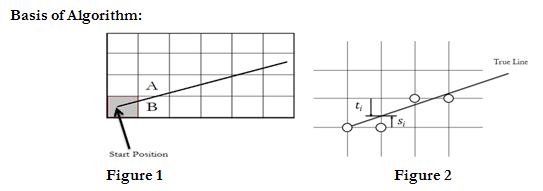

Ans:
- Bresenham’s Algorithm was developed by J. E. Bresenham in 1962.
- It is much accurate and much more efficient than DDA.
- It scans the coordinates but instead of rounding them off it takes the incremental value in account by adding or subtracting and therefore can be used for drawing circle and curves.
- Therefore if a line is to be drawn between two points x and y then next coordinates will be
(xa+1,ya) and (xa+1,ya+1)(xa+1,ya) and (xa+1,ya+1) -
- Where ‘a’ is the incremental value of the next coordinates and difference between these two will be calculated by subtracting or adding the equations formed by them.
Basic Algorithm

- Considering the figure 1, from start point we have to decide A or B.
- For a given value of x as shown in figure 2
one pixel lies at distance titi above the line, and
one pixel lies at distance sisi below the line
- Using Decision parameter formula find out the closest pixel.
- Decision parameter Formula: di=(si−ti)di=(si−ti)
If didi 0, then closest pixel is below true line (sisi smaller).
If di≥0di≥0, then closest pixel is above true line (titi smaller).
- We must calculate the new values for didi as we move along the line.